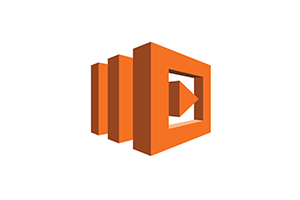

What Is AWS Lambda?

AWS Lambda is a compute service that lets you run code without provisioning or managing servers. AWS Lambda executes your code only when needed and scales automatically, from a few requests per day to thousands per second. You pay only for the compute time you consume - there is no charge when your code is not running. With AWS Lambda, you can run code for virtually any type of application or backend service - all with zero administration. AWS Lambda runs your code on a high-availability compute infrastructure and performs all of the administration of the compute resources, including server and operating system maintenance, capacity provisioning and automatic scaling, code monitoring and logging. All you need to do is supply your code in one of the languages that AWS Lambda supports (currently Node.js, Java, C#, Go and Python).
You can use AWS Lambda to run your code in response to events, such as changes to data in an Amazon S3 bucket or an Amazon DynamoDB table to run your code in response to HTTP requests using Amazon API Gateway; or invoke your code using API calls made using AWS SDKs. With these capabilities, you can use Lambda to easily build data processing triggers for AWS services like Amazon S3 and Amazon DynamoDB, process streaming data stored in Kinesis, or create your own back end that operates at AWS scale, performance, and security.
You can also build serverless applications composed of functions that are triggered by events and automatically deploy them using AWS CodePipeline and AWS CodeBuild. For more information, see Deploying Lambda-based Applications.
For more information about the AWS Lambda execution environment, see Lambda Execution Environment and Available Libraries. For information about how AWS Lambda determines compute resources required to execute your code, see Configuring Lambda Functions.
FOR MORE DETAILS AWS LAMBDA WEB PAGE